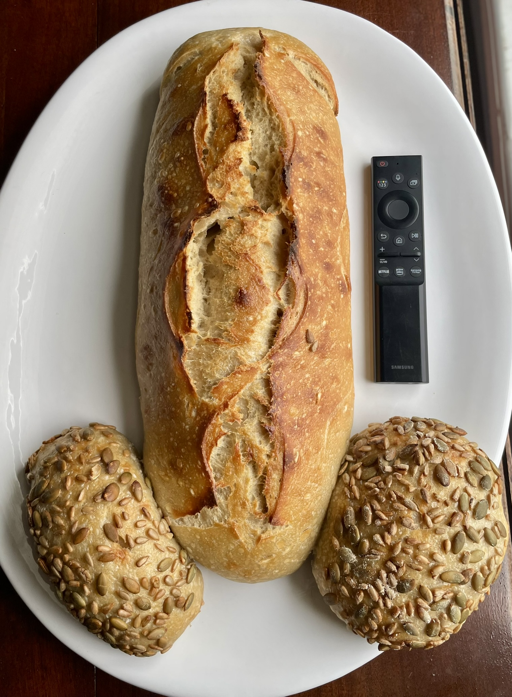
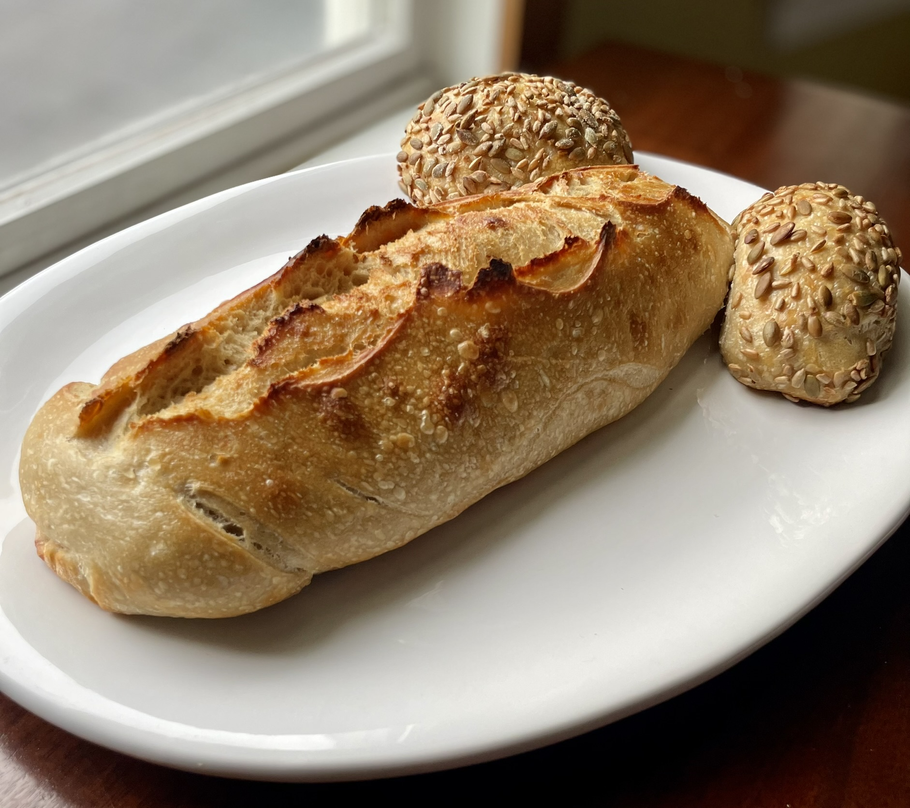

Wild Nunn Bakery · After Dark
🍆 Not For the Faint of Heart 🍆
You asked for it. She made it. She's not apologizing.
This 3.5 pound absolute unit of a loaf is the baked good equivalent of showing up uninvited and eating everything in the fridge.
Wild-fermented, slow-proofed, and shaped with what can only be described as
audacious commitment. The Feral Nunn Loaf is not a snack. It is a statement.
Documented Evidence

3.5 pounds of sourdough. For reference, a standard TV remote is approximately 6 inches long. We'll let you do the math. The Samsung corporation was not consulted, but we feel they'd be honored. This magnificent, swaggering behemoth contains more wild yeast culture than most people's entire sourdough journey.

Veiny. Golden. Unapologetic. This mammoth loaf has the kind of presence that makes people go quiet when you set it on the table. Ideal for bachelorette parties. Nothing says "we support you" like presenting the bride-to-be with 3.5 pounds of artisan sourdough shaped with love, intention, and zero regrets. Pairs well with rosé and screaming.
"I didn't know I needed this until I needed this."— Every bachelorette party, probably